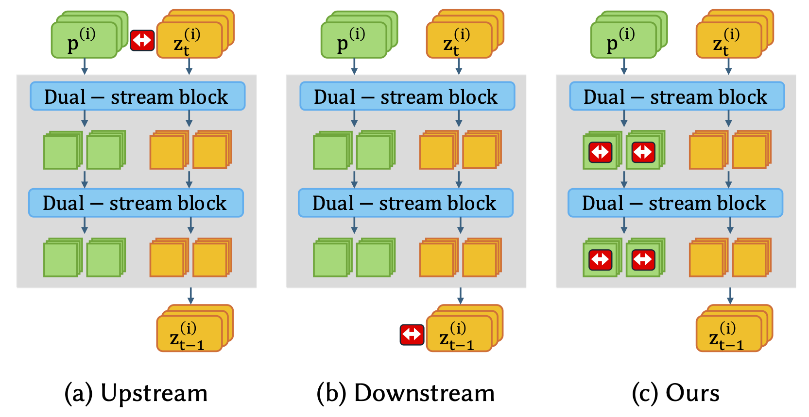
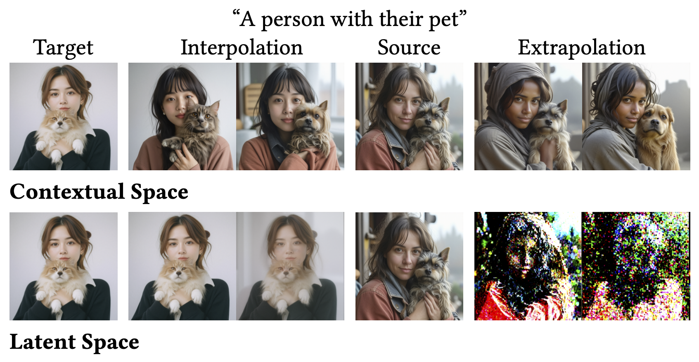
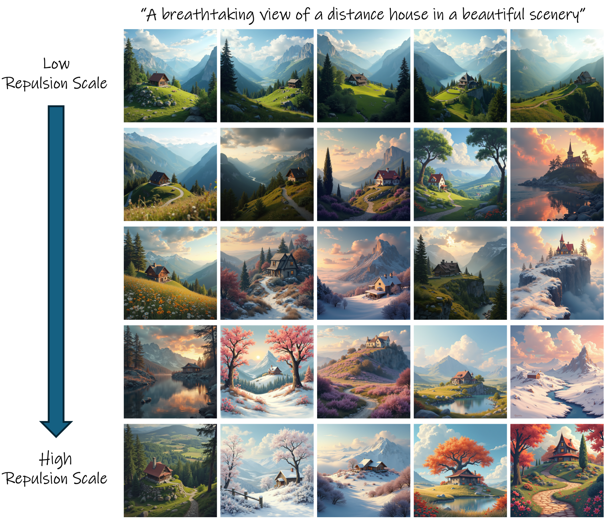

Modern Text-to-Image (T2I) diffusion models have achieved remarkable semantic alignment, yet they often suffer from a significant lack of variety, converging on a narrow set of visual solutions for any given prompt. This typicality bias presents a challenge for creative applications that require a wide range of generative outcomes.
We identify a fundamental trade-off in current approaches to diversity: modifying model inputs requires costly optimization to incorporate feedback from the generative path. In contrast, acting on spatially-committed intermediate latents tends to disrupt the forming visual structure, leading to artifacts. In this work, we propose to apply repulsion in the Contextual Space as a novel framework for achieving rich diversity in Diffusion Transformers. By intervening in the multimodal attention channels, we apply on-the-fly repulsion during the transformer's forward pass, injecting the intervention between blocks where text conditioning is enriched with emergent image structure. This allows for redirecting the guidance trajectory after it is structurally informed but before the composition is fixed.
Our results demonstrate that repulsion in the Contextual Space produces significantly richer diversity without sacrificing visual fidelity or semantic adherence. Furthermore, our method is uniquely efficient, imposing a small computational overhead while remaining effective even in modern "Turbo" and distilled models where traditional trajectory-based interventions typically fail.

A key question in improving diversity is where to intervene during the generation process.
Upstream methods (a) act by modifying inputs like the noise or the prompt. These inputs carry no information about what the image will actually look like yet, so the intervention is effectively blind. To become useful, they typically require iterative optimization that repeatedly queries the model, which is computationally expensive.
Downstream methods (b) act in the image latent space, after the image structure is already largely determined. They push samples apart, but since this space is tied to spatial, pixel aligned representations, the repulsion cannot change high level layout or scene structure. Instead, it mostly perturbs local appearance, which often leads to distortions or artifacts. This issue is even more pronounced in Turbo and distilled models, where the structure is often fixed already in the first step.
Our approach (c) operates in between these extremes. Inside the transformer blocks, the model maintains enriched textual tokens that are continuously updated based on the emerging image. We call this the Contextual Space. Unlike image latents, this space is semantic and not tied to fixed pixel locations, making it a more effective control point. By applying on-the-fly repulsion in the Contextual Space of each block, we steer the generation while it is still flexible, enabling semantically diverse results with negligible computational cost.

To build intuition, let's look at a simple example: generating images from the prompt "a person with their pet." We take two outputs from the model using different random seeds, which we refer to as a source image and a target image.
Now, instead of changing the prompt or the noise, we directly intervene inside the model. We generate new images by taking the internal representation of the source image and gradually interpolating or extrapolating it with respect to the target's representation.
When we do this in the Contextual Space, something interesting happens: the model produces a smooth semantic change. For instance, the pet shifts from a dog-like animal to a cat-like one, and the person’s appearance transitions naturally between different ethnic features.
We can also perform extrapolation by moving in the direction opposite to the target. In this example, "pushing away" from the target gradually darkens the person's features, while simultaneously modifying the pet in a consistent way, such as deepening its coat color or shifting its ears to a more drooping shape. Importantly, each intermediate image remains sharp and realistic.
For context, performing the same operation in the Latent Space behaves very differently. Instead of a smooth transition, the images tend to mix incompatible structures, leading to blurry or distorted results. When we extrapolate in the Latent Space, the effect is even more extreme: the representation is pushed outside the learned data manifold, and the image quickly breaks down into severe artifacts.
In our work, we generalize this principle from a pair of images to an entire batch. Instead of explicitly extrapolating between two samples, we apply repulsion across the batch in the Contextual Space, encouraging each sample to move in a different semantic direction while preserving image quality.

"A camera with old photographs"
@article{dahary2026repulsion,
title = {On-the-fly Repulsion in the Contextual Space for Rich Diversity in Diffusion Transformers},
author = {Dahary, Omer and Koren, Benaya and Garibi, Daniel and Cohen-Or, Daniel},
journal = {arXiv preprint arXiv:2603.28762},
year = {2026},
doi = {10.48550/arXiv.2603.28762}
}